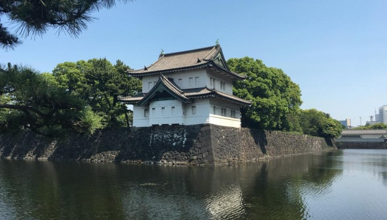
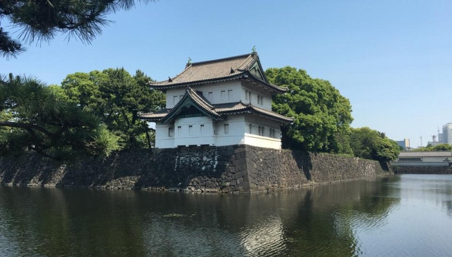

Tokyo Imperial Palace
The current Imperial Palace (皇居, Kōkyo) is located on the former site of Edo Castle, a large park area surrounded by moats and massive stone walls in the center of Tokyo, a short walk from Tokyo Station. It is the residence of Japan's Imperial Family.
Edo Castle used to be the seat of the Tokugawa shogun who ruled Japan from 1603 until 1867. In 1868, the shogunate was overthrown, and the country's capital and Imperial Residence were moved from Kyoto to Tokyo. In 1888 construction of a new Imperial Palace was completed. The palace was once destroyed during World War Two, and rebuilt in the same style, afterwards.
From Kokyo Gaien, the large plaza in front of the Imperial Palace, visitors can view the Nijubashi, two bridges that form an entrance to the inner palace grounds. The stone bridge in front is called Meganebashi (Eyeglass Bridge) for its looks. The bridge in the back was formerly a wooden bridge with two levels, from which the name Nijubashi (Double Bridge) is derived.
The inner grounds of the palace are generally not open to the public. Only on January 2 (New Year's Greeting) and December 23 (Emperor's Birthday), visitors are able to enter the inner palace grounds and see the members of the Imperial Family, who make several public appearances on a balcony.
Furthermore, guided tours of the palace grounds are offered during the rest of the year, although no buildings are entered. The tours take about 75 minutes and are held in Japanese daily at 10:00 and 13:30 except on Sundays and Mondays. Advance reservations can be made through the Imperial Household Agency (see links below), but same-day registrations before the start of the tours are also possible at the Kikyomon Gate.
Adjacent to the inner grounds of the palace are the Imperial Palace East Gardens which are open to the public throughout the year. More information is available on the East Gardens page.
Access
The Imperial Palace is a ten minute walk from Tokyo Station.